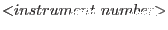
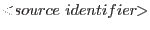
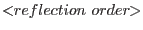

The region extensions added to the source list comply with the ``ASC FITS File Designers' Guide'' specifications. Some non-standard attributes are also provided with every region:
| PROTECT | protected from routine replacement |
| SPACING | number of vertices across each node |
| PIX_ENCL | number of pixels enclosed |
| PIX_AREA | area of a pixel (units vary) |
Additionally, the non-standard COVERAGE attribute is provided
for order regions and the spatial background region, and the
non-standard pair, COVBELOW and COVABOVE
and COVABOVE , is
provided for image regions. These document the percentages used in
constructing the regions. Unless protected, existing versions of the
regions may be overwritten if they are not compatible with the given
parameters. The regions are of four kinds:
, is
provided for image regions. These document the percentages used in
constructing the regions. Unless protected, existing versions of the
regions may be overwritten if they are not compatible with the given
parameters. The regions are of four kinds:
RGS _BACKGROUND
There is only one extension of this kind. In addition to the attributes described above, the list of source identifiers for the image regions excluded from the background is also provided as EXCLSRCS.
RGS _SRC _SPATIAL
There is one extension of this kind for each selected source. In HTR mode the inapplicable attributes SPACING, COVBELOW and COVABOVE are omitted.
RGS _SRC _ORDER_ 
There is one extension of this kind for each requested order, for each selected source.
RGS _SRC _ORD _BKG
There is one extension of this kind for each requested order, for each selected source.